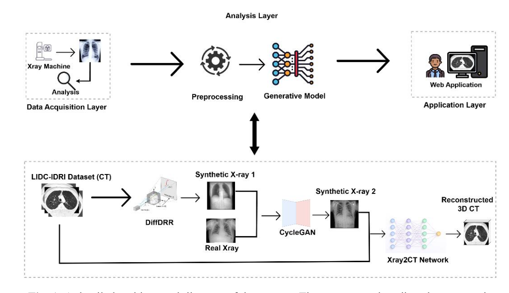
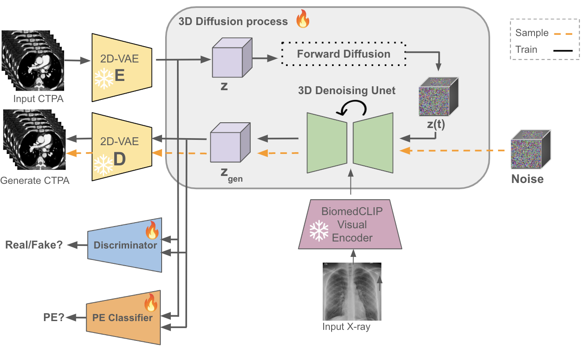
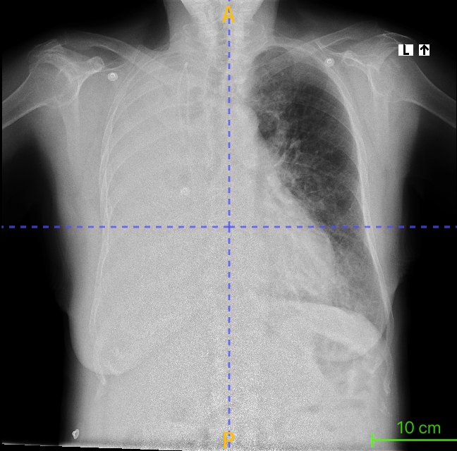
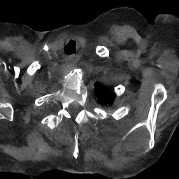
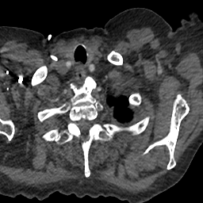
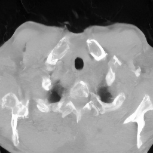
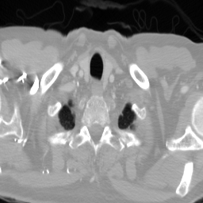
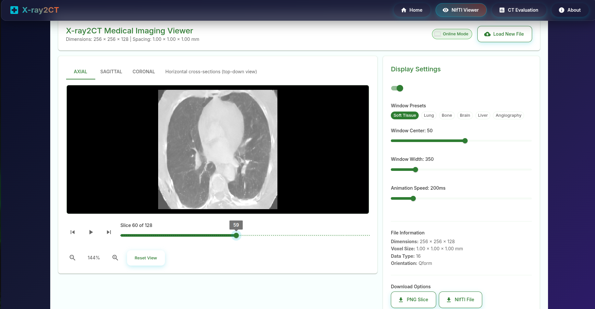
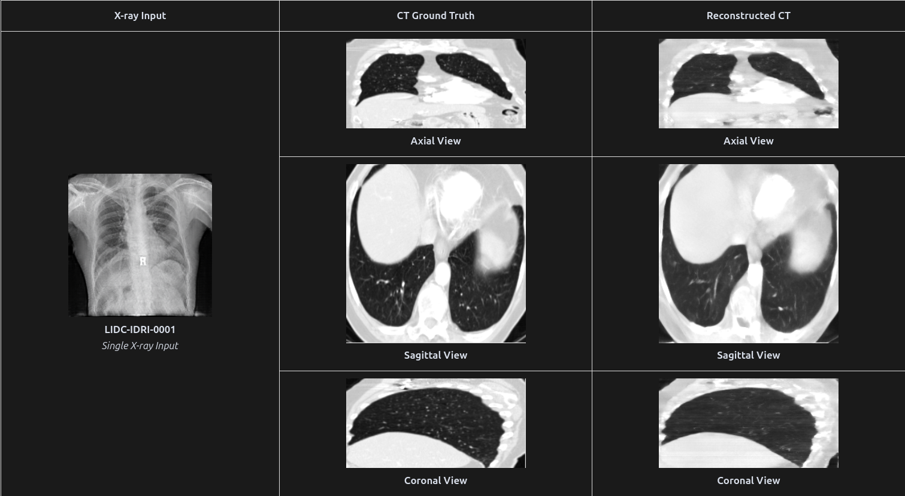
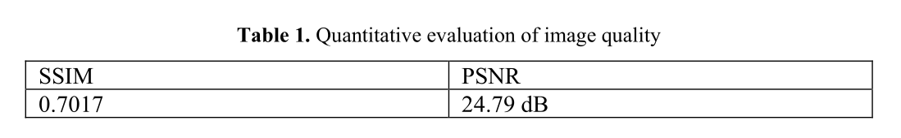

A Deep Learning-based Web Application for CT Reconstruction from X-ray Image
1 Posts and Telecommunications Institute of Technology, Hanoi, Vietnam
2 Thai Nguyen University of Information and Communication Technology, Thai Nguyen, Vietnam
3 Thai Nguyen University of Medicine and Pharmacy, Thai Nguyen, Vietnam
4 School of Mechanical Engineering, University of Ulsan, Ulsan, Republic of Korea
Abstract
This study proposes a web application to address the challenge of accessibility to Computed Tomography (CT) equipment by reconstructing 3D spatial information from a 2D X-ray image. Our proposed method is a multi-stage deep learning pipeline including generating synthetic data from DiffDRR, reducing the domain gap between synthetic and real images by CycleGAN, and reconstructing the CT image from X-ray2CTPA architecture.
The results present that the proposed framework not only reconstructs 3D volumes with consistent anatomical structures but also allows users to interact with rotation and viewing slices (coronal, sagittal, axial) via the web interface. This study hopes to contribute to the collective effort of applying AI to enhance the informational value of common diagnostic imaging modalities, thereby opening up the potential for improved healthcare accessibility for the community.
Method Overview
We propose an end-to-end framework that reconstructs high-fidelity 3D CT volumes from a single 2D chest radiograph. The workflow is organized into three complementary stages: (1) DiffDRR Synthesis generates diverse synthetic digitally reconstructed radiographs from open CT volumes via differentiable ray-tracing; (2) CycleGAN Adaptation reduces the domain shift between synthetic renderings and clinical radiographs; and (3) X-ray2CTPA Diffusion synthesizes the final 3D volumetric CT representations via conditioned 3D latent denoising.


Interactive Demonstration
Explore reconstructed 3D CT volumes and ground truth references generated from 2D chest X-ray inputs across both CTPA and LIDC-IDRI datasets.







Experimental Results
We evaluate our framework on held-out test splits from both contrast-enhanced CTPA and low-dose LIDC-IDRI datasets. Quantitative evaluations demonstrate consistent structural fidelity with a mean SSIM of 0.7017 and PSNR of 24.79 dB.


Citation
If you find this work or demo useful in your research, please cite:
@inproceedings{xray2ct2025,
title = {A Deep Learning-based Web Application for CT Reconstruction from X-ray Image},
author = {Nguyen, Huu Quang Hoa and Le, Tran Quoc Bao and Tran, Quy Dat and Nguyen, Thi Tan Tien and Nguyen, Hang Phuong and Tran, Cong and Pham, Cuong},
booktitle = {Proceedings of the International Conference on Advanced Technologies (ICTA)},
year = {2025}
}